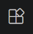
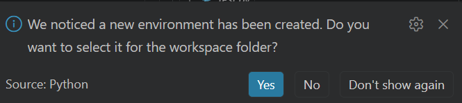

Semaine 4 - Démarrer en Python
Introduction
Cette semaine, l’objectif n’est pas de devenir expert Python, mais d’être capable de démarrer proprement un projet Python.
Vous connaissez déjà bien R et RStudio. L’idee est de traduire ces éléments dans l’écosystème Python et VS Code:
- créer un projet,
- installer des packages,
- exécuter du code,
- et garder un environnement reproductible.
En fin de lab, vous aurez:
- installer VS Code et les extensions utiles;
- installer Python;
- créer un environnement virtuel;
- installer les packages de base pour la science des données;
- adapter un petit script de base.
RStudio vs VS Code: correspondances rapides
| R/RStudio | Equivalent Python/VS Code |
|---|---|
Projet .Rproj |
Dossier de projet |
install.packages() |
pip install ... |
renv |
venv + requirements.txt |
Script .R |
Script .py |
Knit .Rmd |
Jupyter Notebook .ipynb |
Important: en Python, on isole generalement les dépendances dans un environnement virtuel par projet.
1) Installation de Python
Windows
Installez Python depuis python.org.
De base, le site officiel propose d’installer le Python install manager. Il s’agit d’un outil en ligne de commande pour gérer les versions de Python. C’est une bonne option si vous voulez gérer plusieurs versions de Python sur votre machine. Une fois installé, la dernière version de python peut être installée avec (dans un terminal):
pymanager install defaultVerification
Dans un terminal:
python --versionVous devez voir une version de Python (ex: Python 3.14.3).
2) Installation de VS Code et des extensions
Installer VS Code
Si ce n’est pas déjà fait, téléchargez et installez VS Code depuis le site officiel.
Extensions a installer
Dans VS Code, ouvrir l’onglet Extensions

et installer:- Python (Microsoft)
- Pylance (Microsoft) - pour l’autocompletion et les diagnostics
- Jupyter (Microssoft) - pour les notebooks
Optionnel mais utile:
- GitLens
Vérification
Créez un projet de test dans VS Code en créant un nouveau dossier et en ouvrant ce dossier dans VS Code (File > Open Folder).
Créez un fichier test.py avec le contenu:
print("Hello World!")La version de Python doit être reconnue (en bas à droite) et vous devriez avoir l’autocompletion dans le fichier.
Pour exécuter le script, vous pouvez faire un clic droit dans l’éditeur et choisir “Run Python File in Terminal”. Vous devriez voir “Hello World!” dans le terminal.
Vous pouvez également utilisr le bouton run en haut à droite de l’éditeur.
3) Créer un environnement virtuel
Pourquoi?
Les environnements virtuels permettent d’isoler les dépendances d’un projet. Cela évite les conflits entre projets et garantit que votre projet est reproductible. Par exemple, si vous avez deux projets qui utilisent des versions différentes de pandas ou de python, les environnements virtuels permettent de gérer cela facilement.
Depuis le terminal
Vous pouvez ouvrir un terminal dans VS Code depuis le menu (Terminal > New Terminal) ou avec la palette de commandes (Ctrl+Shift+P et chercher “Terminal: Create New Terminal”) et créer un environnement virtuel avec:
python -m venv .venvL’interface devrait vous dire qu’un environnement virtuel a été détecté et vous proposer de l’activer.

Si ce n’est pas le cas, vous pouvez l’activer manuellement.
.\.venv\Scripts\Activate.ps1Depuis VS Code
- Ouvrez la palette de commandes (
Ctrl+Shift+P) - Tapez:
Python: Create Environment - Choisissez
venvet suivez les instructions.
Verification
Pour commencer, un dossier .venv devrait être créé dans votre projet.
Vous pouvez vérifier que l’environnement est actif en regardant le terminal. Vous devriez voir le nom de l’environnement (ex: (.venv)) au début de la ligne de commande.
(.venv) PS C:\Users\Tim\Semaine4> 4) Installer des packages
De manière similaire à R, python offre certaines fonctionnalités de base, mais sa force réside dans les packages externes. Il en existe une multitude pour la science des données, le machine learning, la visualisation, etc.
Packages de base pour commencer:
- numpy - pour les calculs numériques et les tableaux
- pandas - pour la manipulation de données
- matplotlib - pour la visualisation de données (basique et parfois un peu compliquée)
- seaborn - pour la visualisation de données (plus avancée)
- scikit-learn - pour le machine learning
- jupyterlab - pour l’environnement de développement interactif
Installation (assurez-vous que votre environnement virtuel est actif):
pip install numpy pandas matplotlib seaborn scikit-learn jupyterlabSauvegarder les dépendances du projet:
pip freeze > requirements.txtCela permet de garder une trace des versions exactes des packages utilisés dans le projet, ce qui est crucial pour la reproductibilité. Si vous partagez votre projet ou si vous voulez le réinstaller plus tard, vous pouvez utiliser ce fichier pour installer les mêmes versions des packages:
pip install -r requirements.txtVous verrez que si vous reprenez des projets faits par d’autres personnes, il y a souvent un fichier requirements.txt qui liste les dépendances du projet.
5) Analyse de Data_Cannabis.csv
Vous trouverez sur Github classroom un repo dans lequel se trouve un notebook Jupyter (analyse_cannabis.ipynb) qui couvre une analyse de données complète sur un dataset de cannabis.
Ce notebook, qui est similaire à un Rmarkdown, couvre:
- importation des données;
- exploration des données;
- ACP (PCA) et visualisation;
- classification supervisée.
Exécution
Ouvrez le fichier analyse_cannabis.ipynb dans VS Code. Assurez-vous que le kernel Python est bien celui de votre environnement virtuel (.venv).
Vous devriez ensuite pouvoir exécuter les cellules du notebook une par une (avec le bouton “Run Cell” ou Shift+Enter) et voir les résultats directement dans le notebook.
Essayez de comprendre chaque étape du code et les résultats affichés. N’hésitez pas à modifier le code pour voir comment cela affecte les résultats (ex: changer les variables utilisées, les paramètres du modèle, etc.).
Pour aller plus loin, vous pouvez aussi essayer d’ajouter des visualisations supplémentaires ou d’ajouter un étape de prétraitement des données, par exemple en appliquant une étape de normalisation des variables avant l’ACP.
6) À vous de jouer: mini-exercice
Contexte
Vous avez à disposition des analyses issues de différentes saisies faites dans différentes provinces et villes de Suisse. Le but de cet exercice est de voir s’il est possible de séparer chimiquement les échantillons saisies dans les différentes régions, indiquant possiblement des réseaux de distribution différents.
Deux inconnus sont également à disposition, qui correspondent à des échantillons saisis à la frontière. L’objectif est de voir s’il est possible de déterminer vers quelle région ces échantillons étaient destinés.
Créez un notebook Jupyter et essayez de faire une analyse similaire à celle du notebook analyse_cannabis.ipynb en suivant les étapes:
- charger un fichier CSV,
- Explorez vos données (dimensions, types de variables, valeurs manquantes, etc.),
- Essayez de visualiser les données (ex: PCA, pairplot, etc.),
- Essayez si besoin de faire une classification supervisée (ex: Random Forest).
- Déterminez à quelle région les échantillons inconnus sont les plus similaires.
Données à disposition
data/saissies.csv: données de saisies avec des variables chimiques et la région de saisie.data/inconnu.csv: données des échantillons inconnus.